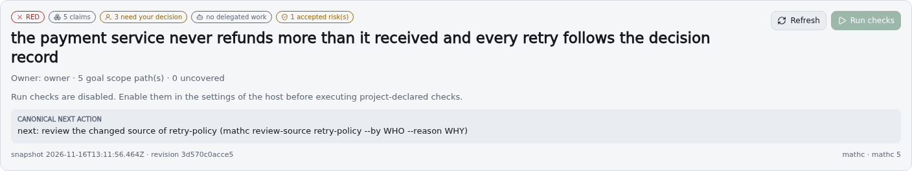
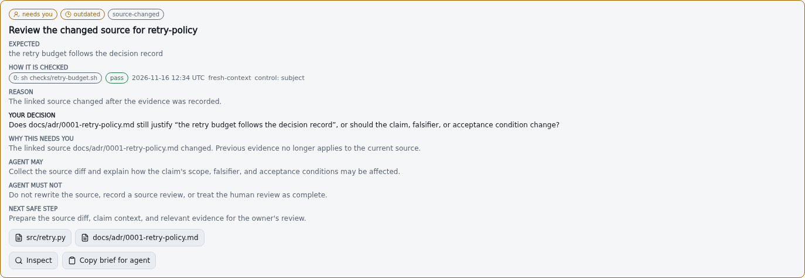
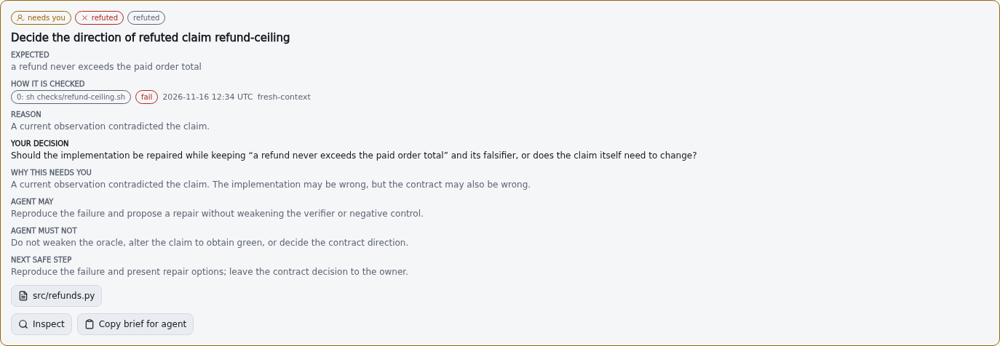
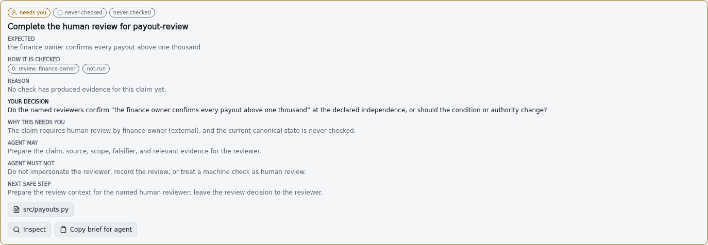
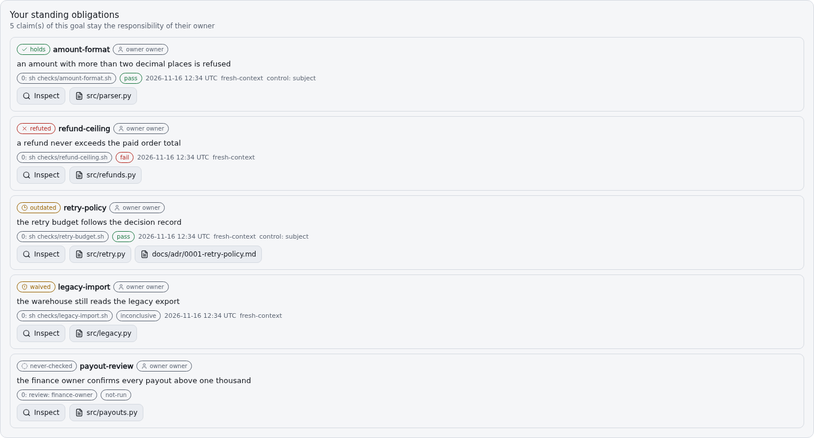
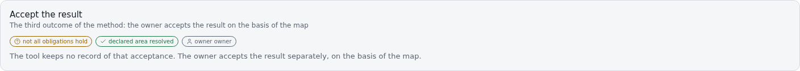
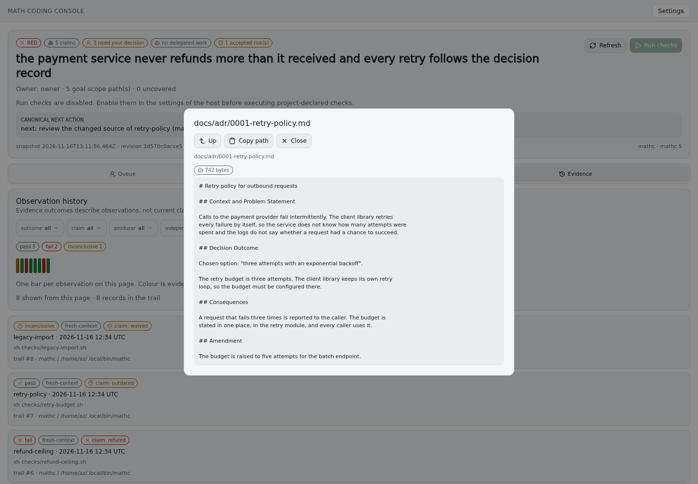
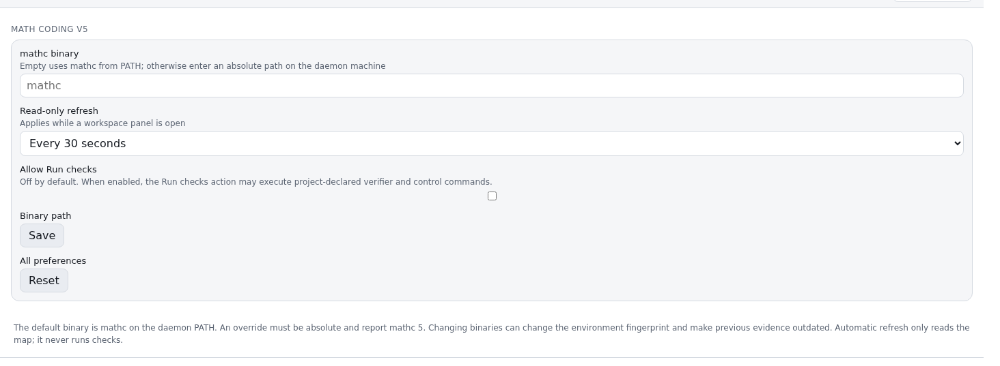
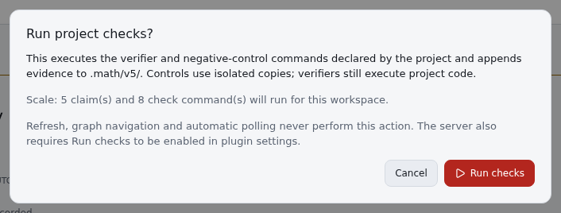

Interfaces
The map of the tool has one source of truth: the output of
mathc map --json. The console does not compute a state, a verdict
or a coverage — it reads them. What the console adds is a way to look at
that output: the plugin for Paseo and the local browser page are two hosts
over one interface, and the interface is the same in both.
Two hosts, one interface
| layer | what it is |
|---|---|
shared/ | the contracts without a host: the schemas of the snapshot, of a claim, of the journal, of a run, of a file and of the settings |
client/ | the interface itself: the queue of the human, the claims, the proof graph, the scope, the evidence journal, the claim card, the settings screen |
client/host/paseo.tsx | the Paseo host: the primitives the interface may use (modal, input fields, settings elements, calls, clipboard, notifications) |
console/src/browser-host.tsx | the browser host: the same primitives, in the browser |
server/core/operations.ts | five operations over the project — snapshot, claim, evidence, run, file — and a queue that serializes them |
The plugin is a view over mathc, not a second implementation of
the method. The client audit (npm run audit:client) checks that
the common layer never imports a host package: only
client/host/paseo.tsx is allowed to do that, and the local page
imports the common layer inward and never outward.
What the plugin adds to Paseo
- A workspace panel Math Coding, open in the workspace and in the explorer.
- An item of the Command Center: Open Math Coding attention desk.
- The slash command
/mc. - A settings screen Attention and runtime: the binary, the read-only refresh and the switch that allows running the checks.
The first screen of the panel answers three questions and only three: what the human must decide now, what an agent may do by itself, and which risk has already been accepted. It does not answer with a count of rows.
The local browser page
The same console without Paseo: a page in the browser over the same client layer and the same server core.
- The server listens on the loopback address only and takes one fixed project root; the paths of the project never come from the browser.
- The settings live outside the project, in
~/.config/math-coding-console/settings.json, so reading the page never changes the live tree. - The file preview stays inside the root: a relative path without
.., a symlink out of the tree is refused, the size is bounded and only a regular file is opened. The server reads the file and changes nothing in it. - Running the checks is off by default and needs both a permission in the settings and a second confirmation in the interface. Together they protect against an accidental run; they are not authentication of the plugin code.
By default the binary is mathc from the PATH. An
explicit override must be an absolute path and must report mathc 5:
a different binary changes the environment fingerprint and can make previous
evidence outdated.
The boundary of trust
The only source of the verdict and of the state of a claim is
Neither host recomputes freshness, independence, the reach of the control or
the composition of all and any. An observation
pass does not become holds, a waiver does not become
green and not-run does not become refuted. An unknown
schema, a damaged journal, a project that changed while it was read or a
verdict that disagrees with the exit code produce an explicit error —
never a fallback to the previous success.
The screens
Every picture below comes from one demonstration project: a payment service in which one claim holds, one is refuted, one has a changed source, one is an accepted risk and one has never been checked. The pictures show the shared interface layer as it is drawn in the local browser page; the plugin draws the same components in the panel of Paseo, with the shell of Paseo around them. The interface speaks English, and every picture opens in its own size.
the head of the console

the queue of the human — a changed source

the queue of the human — a refuted claim

the queue of the human — an open review

the standing obligations

accepting a result

what the agent may do

explore — the claims

explore — the proof graph

explore — the scope

the card of a claim

the file of the subject

the journal of observations

the settings of the host

the confirmation before a run

The console is a view over the tool, never a second copy of
it. If a state is wrong on the screen, the map of mathc is wrong
— and the map is the thing that is checked.